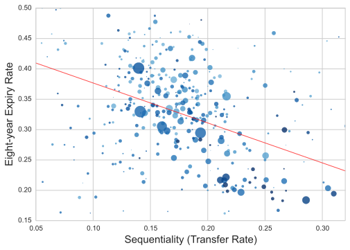

Test Article Prime Directive
Douglas Hanley (Pitt)
Abstract
Various things are explained in this article. Various things are $\ell^2$ explained in this article. Various things are explained in this article. Various things are explained in this article. Various things are explained in this article. Various things are explained in this article. Various things are explained in this article. Various things are explained in this article. Various things are $\int_0^1 x^2 dx$ explained in this article. Various things are explained in this article. Various things are explained in this article. Various things are explained in this article.
Introduction
Various things are explained in this article. Various things are $\ell^2$ explained in this article. Various things are explained in this article. Various things are explained in this article. Various things are explained in this article. Various things are explained in this article. Various things are explained in this article. Various things are explained in this article. Various things are $\int_0^1 x^2 dx$ explained in this article. Various things are explained in this article. Various things are explained in this article. Various things are explained in this article.
Thanks to KaTeX magic, errors are show inline
Mechanism
Free text 2, see and for info.
Check Out This Clear Trend
This shows some stuff
Test of equation array
Free text 3, according to this is valid.
See and additionally for more details. This is in line with the results in .
Yepppp
- Remove non-corporate entities
- Drop corporate name identifiers and common English words
- Group and standardizing suspected acronyms
- Construct a similarity score basic on token and positional information for each pair of names
- Group names by a given cutoff similarity score
Results
Free text 2, see and for info.
Check Out This Clear Trend
This shows some stuff
Free text 3, according to this is valid.
See and additionally for more details.
Technological capability evolves according to